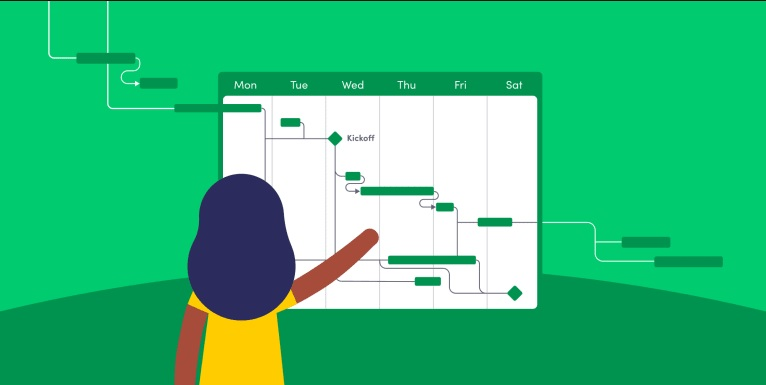
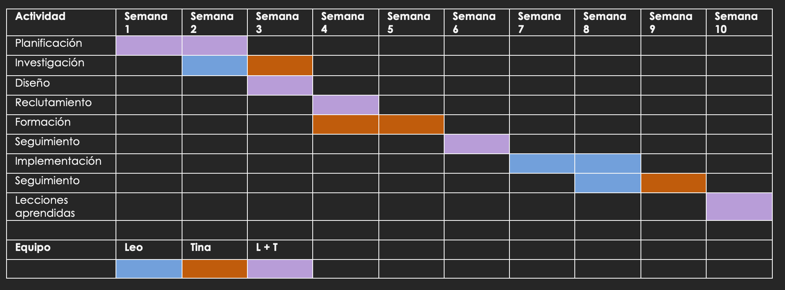

En el mundo de la gestión de proyectos, una herramienta que ha demostrado ser invaluable es el "Diagrama de Gantt". Este gráfico visual se ha convertido en un estándar ampliamente utilizado para planificar, coordinar y monitorear el progreso de las tareas en proyectos de diversa índole. El Diagrama de Gantt proporciona una representación clara y concisa de las actividades a lo largo del tiempo, permitiendo a los equipos de proyecto entender la secuencia de tareas, sus dependencias y la duración prevista para cada una.

El principal propósito del Diagrama de Gantt es proporcionar una representación visual clara y concisa de la progresión de las tareas a lo largo del tiempo en un proyecto. Esta representación permite a los equipos y stakeholders entender fácilmente:
La duración prevista de cada tarea y su ubicación en la línea de tiempo.
Las interdependencias entre las distintas tareas.
El flujo general del proyecto y las etapas clave.
El progreso real en comparación con el planificado.
De esta manera, el Diagrama de Gantt actúa como una herramienta de comunicación esencial, mejora la coordinación y asignación de recursos, y facilita la identificación temprana de desviaciones o retrasos. Su utilidad se extiende a la toma de decisiones informadas y a la adaptación flexible ante cambios que puedan surgir durante la ejecución del proyecto. En definitiva, el Diagrama de Gantt es un aliado valioso para una gestión eficiente y efectiva de proyectos.
Componentes
Línea de Tiempo:
Representa el período de tiempo total del proyecto. Suele estar en el eje horizontal y se divide en días, semanas o meses, dependiendo de la duración del proyecto.
Tareas:
Son las actividades o acciones específicas que deben llevarse a cabo en el proyecto. Cada tarea se representa como una barra horizontal en la línea de tiempo. La longitud de la barra indica la duración de la tarea.
Duración de las Tareas:
Cada tarea se muestra en la línea de tiempo con su inicio y finalización. La duración de la tarea se muestra visualmente por la longitud de la barra.
Dependencias:
Las relaciones entre las tareas se muestran mediante flechas o líneas que conectan las tareas. Estas flechas indican la secuencia en la que las tareas deben realizarse.
Hitos:
Son eventos o puntos de referencia importantes en el proyecto que no requieren tiempo para completarse. Se representan como puntos en la línea de tiempo y se utilizan para marcar momentos clave en el progreso del proyecto.
Etiquetas y Nombres de Tareas:
Cada tarea puede tener un nombre o una etiqueta que describa lo que implica. Esto proporciona una comprensión rápida de lo que implica cada tarea.
Leyenda:
Puede incluir símbolos o colores que representen diferentes tipos de tareas, como tareas completadas, en progreso o pendientes.
Eje Vertical:
Puede representar los recursos (personas, equipos, equipos) asignados a las tareas o los nombres de las tareas. Esto varía según el diseño del diagrama de Gantt.
El tablero
Escencialmente el elemento central y clave del modelo Kanban es su tablero - donde visualizamos abiertamente las tareas de todxs lxs miebros del equipo al unísono.
Las tareas se marcan con Notas y se colocan en relación al estado de las mismas en el tablero.
Al tablero en sí se le divide en un número x de columnas (Tres como mínimo), en donde la metodología será ir moviendo de izquierda a derecha las tareas hasta llegar al extremo del tablero dando a entender al equipo que la tarea en cuestión está finalizada.
Sobre la Izquierda se encuentran las Tareas «pendientes» (backlog).
Sobre el centro la/s tarea/s actualmente «en curso» (Work in Progress - WiP).
Sobre las derecha las tareas «completas» (Done).
Dada la jeraquía de algunas tareas por sobre otras en los proyectos, podemos dar prioridad en un tablero Kanban utilizando los denominados "carriles" ("swimmlanes" en Inglés). Estos carriles son filas horizontales (imaginarias o marcadas; da igual) que subdividen a la columna donde se colocan las tareas «en curso».
El equipo puede situar en la parte superior todo el trabajo que debe realizarse con más urgencia y - por debajo escalonadamente - aquellas tareas que no son tan prioritarias; consiguiendo de esa manera que todos lxs miembros del grupo tengan una visión general de las tareas urgentes.
Desventajas de utilizar el diagrama de Gantt
Aunque sea una herramienta clave para la gestión de proyectos, también tiene ciertas desventajas. Las más importantes son las siguientes:
Complejidad en proyectos grandes:
En proyectos grandes con muchas tareas interdependientes y recursos compartidos, el diagrama de Gantt puede volverse complicado y difícil de interpretar. La sobrecarga de información puede llevar a confusiones y dificultades para comprender la relación entre las tareas.
Falta de flexibilidad:
Una vez que se establece un diagrama de Gantt, puede ser difícil realizar cambios en el plan sin tener que reajustar manualmente todas las fechas y dependencias. Esto puede ser un problema en proyectos que experimentan cambios frecuentes o imprevistos.
No muestra las relaciones de dependencia de manera clara:
Si bien el diagrama de Gantt puede representar las dependencias entre tareas, no siempre es fácil identificar las interdependencias complejas o entender cómo un retraso en una tarea podría afectar otras tareas y el proyecto en su conjunto.
No refleja eficientemente la carga de recursos:
Aunque puedes asignar tareas a diferentes recursos, no proporciona una vista detallada de la carga de trabajo de esos recursos. Puede haber situaciones en las que un recurso esté sobrecargado mientras que otro tenga capacidad ociosa, pero esto no se reflejará claramente en el diagrama.
Dificultad en la gestión de cambios:
Cuando se realizan cambios en el proyecto, como retrasos o adelantos en las tareas, puede ser complicado ajustar el diagrama de Gantt de manera precisa, especialmente si hay muchas tareas y dependencias involucradas.
Enfoque en el tiempo más que en las tareas:
El enfoque principal del diagrama de Gantt es mostrar la duración y la secuencia temporal de las tareas. Esto puede llevar a que los equipos se centren demasiado en los plazos y no lo suficiente en la calidad de las tareas o en la eficiencia general del proceso.
No es ideal para proyectos ágiles o iterativos:
En proyectos que siguen enfoques ágiles o iterativos, donde las tareas y los objetivos cambian con frecuencia, el diagrama de Gantt puede resultar limitante. Estos proyectos se benefician más de herramientas que permitan una planificación y adaptación más flexible.
Puede generar una falsa sensación de seguridad:
Aunque el diagrama de Gantt puede parecer una representación ordenada y planificada del proyecto, puede llevar a una falsa sensación de seguridad en la planificación. Los imprevistos y las incertidumbres no siempre se reflejan en el diagrama, lo que puede dar lugar a problemas en la ejecución real.
Ejemplo

Para culminar voy a compartir un ejemplo de uso de un diagrama de Gantt
Supongamos que tenemos las siguientes tareas:
Requerimientos del cliente
Diseño de la interfaz
Desarrollo del backend
Desarrollo del frontend
Pruebas y depuración
Entrega final
Creariamos un diagrama de Gantt, en el eje x, colocariamos las tareas a relizar, y en el eje y, los tiempos de cada tarea.
Cada una de esas tareas, se representaria en una barra que va desde el dia de inicio hasta el dia de culminacion.
En este caso, colocariamos los "requerimientos del cliente" en el dia 1 y 2, diseno de la interfaz, del dia 3 al 6, desarrollo del backend, del dia 6 al 10, y asi sucesivamente con cada tarea.
Esto nos va a ayudar a visuzalizar cada tarea, y tener presnete los tiempos de cada una y del equipo en general.